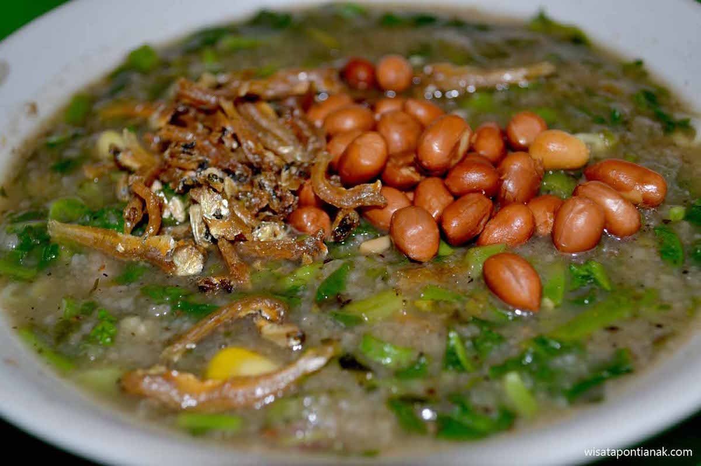
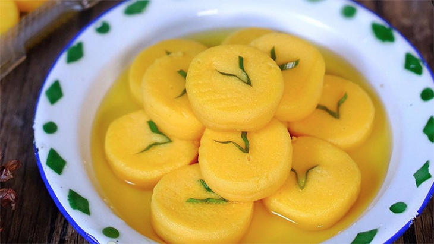
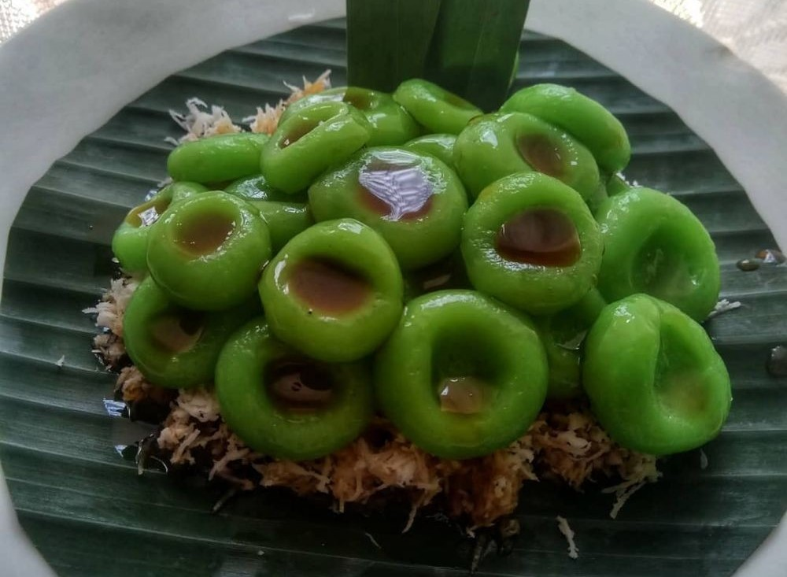

Soto banjar
Kalimantan SelatanSoto banjar menggunakan daging ayam kampung, telur bebek, serta bumbu seperti kayu manis dan kapulaga yang memberikan rasa gurih serta manis.

Bubur pedas
Kalimantan BaratBubur pedas ini adalah sarapan khas di Kalimantan Barat, bubur ini paling enak disantap bersama ikan teri plus jeruk nipis.

Bingka barandam
Bingka barandam adalah kue yang disajikan dengan cara di rendam kedalam kuah gula merah.

Gegicak
Kue gegicak berbahan dasar tepung ketan, parutan kelapa, dan gula merah. Kue tradisional ini memiliki rasa manis, teksturnya lembut dan kenyal.